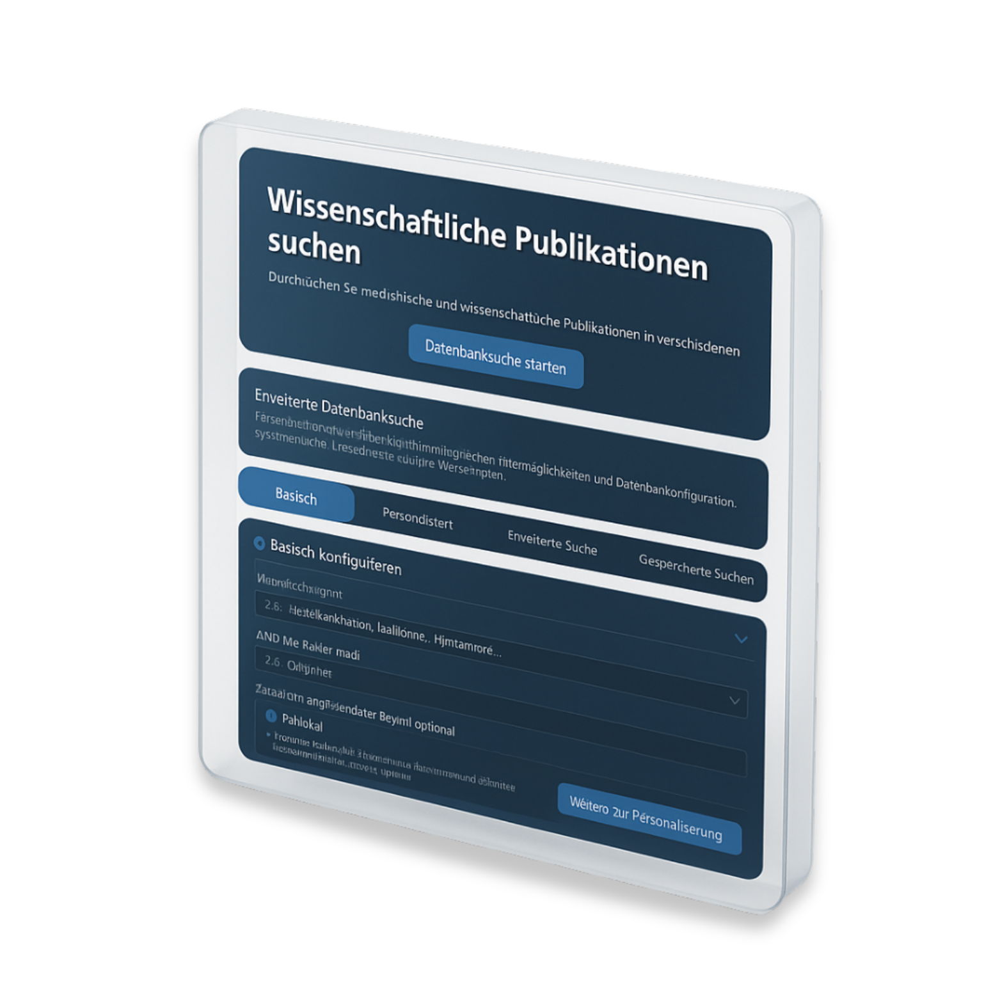

Medical Spytool
Innovative medizinisch-wissenschaftliche Recherche-Anwendung als Desktop- und Webanwendung für umfassende Datenauswertung und detaillierte Analysen


Innovative medizinisch-wissenschaftliche Recherche-Anwendung als Desktop- und Webanwendung für umfassende Datenauswertung und detaillierte Analysen
Browser-basierte Benutzeroberfläche
Lokal-basierte Benutzeroberfläche
Medical Spytool ist eine plattformunabhängige Recherche- und Analyseanwendung, die medizinisch-wissenschaftliche Publikationen aus mehreren Datenquellen zentral zusammenführt, intelligent filtert, anschaulich visualisiert und in gängige Formate exportiert. Das komplett in Python entwickelte Solo-Projekt verfügt über eine klar strukturierte, Enterprise-ready Codebasis, Docker-Support sowie ein komfortables CLI-Tool, mit dem du vom Klonen bis zur ersten eigenen Suche nur wenige Befehle benötigst.
Implementierung strenger Sicherheitsmaßnahmen für sensible medizinische Daten
Gewährleistung schneller Analysezeiten auch bei großen Datenmengen